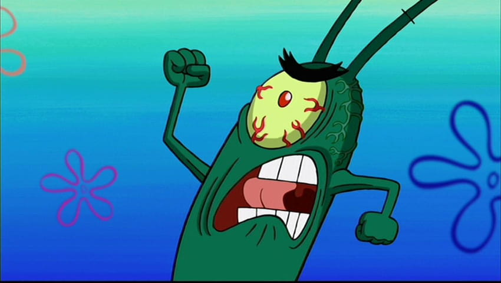

Sheldon J. Plankton

Contact
The Chum Bucket, Bikini Bottom
Email: plankton@chumbucketmail.com
Phone Number: 1-800-CHUMBUCKET
Summary:
Innovative and ambitious entrepreneur with a relentless drive to achieve success in the fast food industry. Seeking opportunities to apply my strategic thinking, scientific expertise, and determination to create groundbreaking solutions and dominate the culinary world.
Education:
Master's Degree in Evil Sciences
- Evil University, Bikini Bottom
- Graduated: May 2000
Professional Experience:
- Owner and Operator
- Chum Bucket, Bikini Bottom
- 2000 - Present
- Pioneered the creation of the Chum Bucket restaurant, offering a unique range of cuisine despite competitive challenges.
- Utilized scientific knowledge and creativity to develop inventive recipes and attract new customers to the establishment.
- Led a small team of loyal employees, fostering a collaborative environment that values innovation and hard work.
- Continuously pursued new ways to improve the business, often experimenting with unconventional methods.
Invention and Research:
- Scientific Innovator
- Chum Bucket Laboratory, Bikini Bottom
- 1995 - 2000
- Conducted groundbreaking research in the fields of culinary science and robotics, leading to the creation of various inventions.
- Designed and built advanced machinery to support restaurant operations and food preparation, showcasing adaptability and problem-solving skills.
- Continually iterated on inventions, adapting to challenges and feedback, demonstrating determination and resilience.
- Mastery in creating uniquely unappetizing yet intriguing dishes that push the boundries of taste
Skills:
- Culinary Innovation
- Scientific Research
- Strategic Planning
- Leadership and Team Management
- Invention and Prototyping
- Problem Solving
- Business Development
- Communication
- Persistence and Ambition
Interests/Goals:
- World Domination
- Scientific Experiments
- Karaoke (secret passion)
- Futuristic Technology
- Krabby Patty Secret Formula
Used ChatGPT for help for attributes of Plankton
© 9/6/23